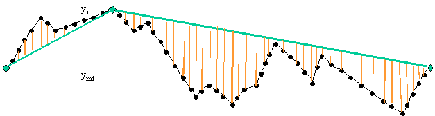

Algorithme de base
Algorithme de base
L’algorithme a implémenté se résume en trois points :
- Au début les deux points extrémités d’un segment sont choisis,
- Puis on ajoute uns à uns des points en prenant toujours celui qui est le plus loin de la ligne rejoignant les points déjà
Le principe de fonctionnement de l’algorithme est résumé par la figure suivante.


Dans le programme original
Ends&Bends en Basic, l’erreur globale entre le tracé réel et le tracé simplifié est estimée par la moyenne des carrés des distances entre les points réels et le tracé simplifié, divisé par la longueur totale du tracé réel.
A l’aide de cette erreur, le logiciel défini 5 modèles correspondant chacun à un niveau d’erreur particulier (10
-1 pour le modèle 1, jusqu’à 10
-5 pour le modèle 5).
Algorithme adapté pour prendre en compte la limite de 999 points
L’algorithme de base décrit plus haut peut être adapté pour mieux prendre en compte la limite de 999 points.
En effet, l’inconvénient de la technique « des modèles », est ces modèles ne dépendent pas du tout du nombre de point obtenu : il arrive fréquemment qu’un modèle ait beaucoup moins de 999 points alors que le suivant en a beaucoup plus, l’opérateur doit alors sélectionner le modèle le moins précis pour respecter la limite.
Or l’algorithme fonctionne en ajoutant les points uns à uns, on peut donc décider de l’arrêter en utilisant n’importe quel critère.
L’algorithme implémenté dans la nouvelle application
Ends&Bends utilise cette particularité pour calculer des modèles intermédiaires ayant un multiple de 999 points. Le résultat n’est plus limité à 5 modèles, il peut en contenir jusqu’à 10.
Deux critères sont donc utilisés pour définir un modèle :
- Soit l’erreur passe en dessous d’une limite en 10 -n,
- Soit le nombre de point dépasse un multiple de 999.
Calcul par segment
Pour régler plus finement la réduction des points sur un segment, une autre variante de l’algorithme a été implémentée : il s’agit de demander à l’opérateur le nombre de points qu’il désire obtenir.
Dans cette variante, l’algorithme reste inchangé, mais un seul modèle est calculé. Ce modèle contient exactement le nombre de points demandés.
Calcul optimisé
Finalement une dernière méthode a été implémentée, toujours en exploitant le fait que l’algorithme ajoute les points uns à uns et en changeant le critère d’arrêt pour l’ajout des points.
Ce calcul est destiné à prendre en compte la limite des 999 points sur l’ensemble de la campagne et non plus sur un seul segment.
Pour ce faire l’algorithme traite tous les segments en même temps. A chaque itération il détermine quel segment il doit optimiser puis ajoute un point à ce segment. L’algorithme s’arrête quand la somme des points des segments atteint 999.
Le choix du segment à optimiser peut se faire de deux façons :
- soit on choisit celui qui possède le point le plus éloigné du tracé simplifié,
- soit on choisit celui qui a la plus grosse erreur globale.